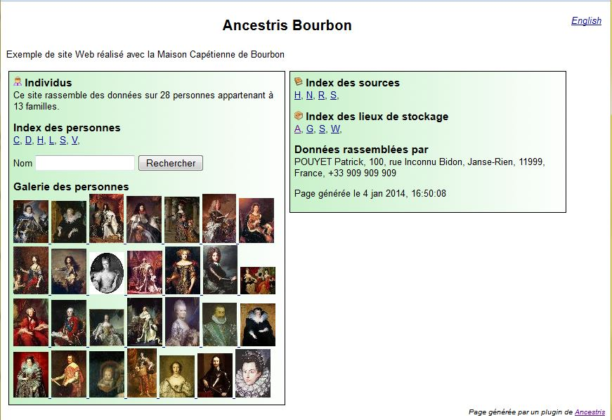
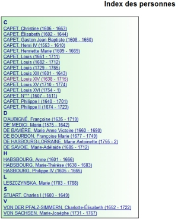
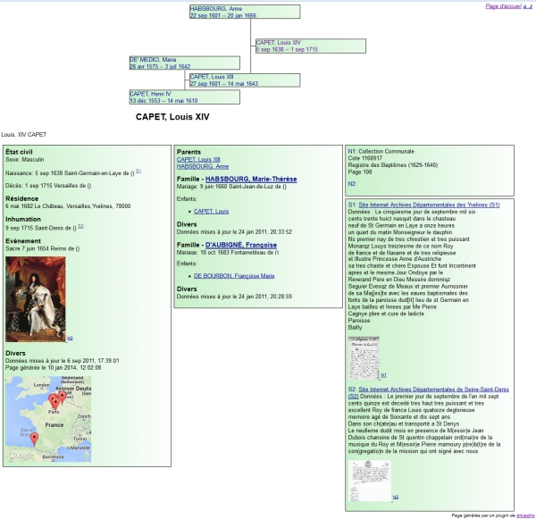
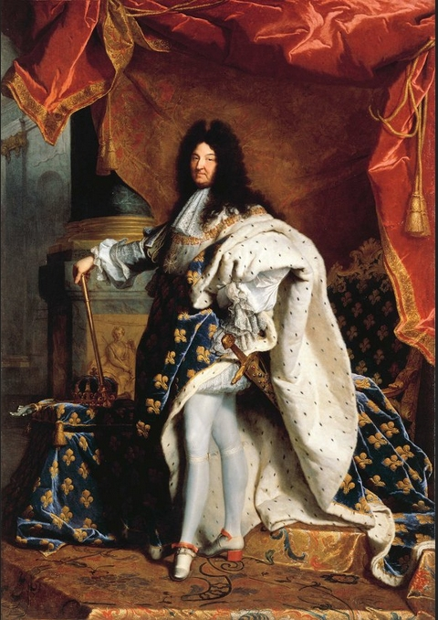

Exports - SiteWeb : Objectifs
|
|
Auteur: Erik Melkersson - erik.melkersson AT gmail DOT com
|
Exports - SiteWeb transforme un fichier.ged qui contient une généalogie en un siteWeb.
Il ne modifie en rien votre généalogie, alors vous pouvez essayer sans risque.
Un siteWeb, c'est un dossier (ou répertoire) que vous déposez sur n'importe quel support : disque dur, un CD, une clé USB, votre site Internet, que vous pouvez envoyer à un contact.
Un siteWeb c'est un document que vous pouvez lire avec n'importe quel navigateur Internet, sur n'importe quel ordinateur.
Page d'accueil du site Web obtenu avec la généalogie des Bourbons.

L'index des personnes du site Web obtenu avec la généalogie des Bourbons.

La fiche d'un individu.

Et on peut même agrandir la photo.
